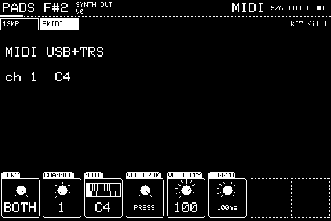
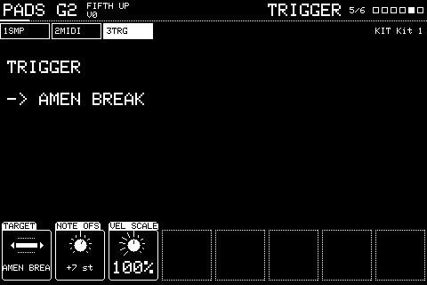

Chapter 4
Other actions
4.1 MIDI
A slot with a MIDI action (ADD, MIDI): the page after ARP.
Launchpad: Right arrow.

Sends a note out to another instrument. LAYER follows it, as for a sample.
| Knob | Setting | Turn | Push |
|---|---|---|---|
| 1 | PORT | USB, TRS or BOTH | |
| 2 | CHANNEL | MIDI channel 1 to 16 | |
| 3 | NOTE | The note sent | |
| 4 | VEL FROM | FIXED uses VELOCITY; PRESS uses how hard you played | |
| 5 | VELOCITY | The velocity sent when FIXED, 1 to 127 | |
| 6 | LENGTH | How long before the note off, 1ms to 10s, where the trigger mode doesn't decide it |
Knobs not listed do nothing here. Shift + push puts most settings back to how a new one has them.
4.2 TRIGGER
A slot with a TRIGGER action (ADD, TRIGGER): the page after ARP.
Launchpad: Right arrow.

Presses another slot, as if its note were played, for chains and layers across slots.
| Knob | Setting | Turn | Push |
|---|---|---|---|
| 1 | TARGET | The slot it presses | |
| 2 | NOTE OFS | Shifts the note it presses by -48 to +48 semitones | |
| 3 | VEL SCALE | Scales the velocity passed on, 0 to 200% |
Knobs not listed do nothing here. Shift + push puts most settings back to how a new one has them.